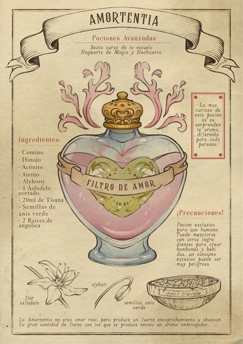

Amortentia – The Elixir of Enchantment
"Beware the rosy tendrils of infatuation—Amortentia’s power lies in illusion, not true affection."

Description
Amortentia is the most potent love potion known to wizardkind. Its shimmering mother-of-pearl sheen and spiralling vapours are as enchanting as the effect it casts: a powerful infatuation that borders on obsession. Though it cannot create true love, it draws forth the desires buried deep within a person’s heart.
Ingredients
- 1 pinch edible pearl dust
- 3 fresh rose thorns, finely crushed
- 8 peppermint leaves, gently bruised
- ¼ moonstone, ground to a shimmer
- A drop of vanilla-infused oil (optional)
Steps
- Fill your cauldron with pure spring water and ignite a steady flame
- Stir in pearl dust, three turns clockwise, until the water glows faintly.
- Add rose thorns and peppermint leaves; stir once anticlockwise.
- Gently sift in moonstone powder; the liquid shifts from blush to soft lavender.
- (Optional) Drip in vanilla-infused oil for depth of scent.
- Reduce heat to embers; stir seven times anticlockwise at seven-second intervals.
- As mother-of-pearl steam rises in a spiral, remove from heat and decant immediately into crystal phials.
Home